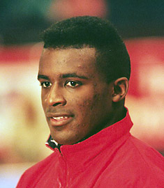

Chainey Umphrey (USA)
1990 US Olympic Festival AA Champion

Chainey was born on August 2, 1970, in Albuquerque, New Mexico. He trained at Gold Cup Gymnastics with coach Ed Burch. Umphrey had a successful collegiate career at UCLA, graduating in 1994. He attended medical school and now lives in Denver, CO, with his wife and son.
Competition Results
1980
Mid-America Invitational (age 9 and under): 3rd AA
1985
JO Nationals (Class II): 1st AA, 1st FX, 1st R, 2nd PH, 2nd PB
1986
Chiang Kai Shek Jr. Intl. Invitational: 1st HB
US Championships: 39th AA
US Olympic Festival: 19th AA
1987
Camellia Gymfest: 1st AA, 1st FX, 1st PH, 1st R, 2nd PB, 2nd HB
US Championships: 20th AA
1988
Camellia Gymfest: 1st AA
Jr. Pacific Alliance Championships: 4th AA
US Championships: 27th AA
1989
Blume Memorial: 11th AA
US Championships: 7th AA, 2nd R, 4th PB, 4th HB
US Olympic Festival: 2nd AA
1990
GER-USA-USSR Meet: 18th AA
NCAA Championships: 3rd Team, 2nd R
US Championships: 2nd R, 6th V
US Olympic Festival: 1st AA
USA-GDR Dual Meet: 2nd Team, 5th AA
USA-USSR Dual Meet: 2nd Team, 5th AA
Winter Cup: 47th AA
1991
NCAA Championships: 3rd Team, 7th AA, 2nd HB, 8th R
US Championships: 2nd AA, 2nd R, 5th FX, 5th PB
World Championships: 5th Team
1992
US Olympic Trials: 8th AA
1993
NCAA Championships: 2nd AA, 4th HB, 6th R, 7th PB
Soapberry World Gym Challenge: 3rd AA
University Games: 13th AA
US Championships: 2nd AA, 1st PB, 2nd R, 2nd HB, 5th V, 6th FX
1994
American Cup: 4th AA
Goodwill Games: 6th AA, 5th HB, 8th R
Intl. Mixed Pairs: 4th Team
US Championships: 38th AA
USA-BLR-CHN Meet: 11th AA
Winter Cup: 4th AA
World Championships (Brisbane): 24th AA, 4th HB
1995
US Championships: 11th AA, 5th HB
Winter Cup: 1st AA
1996
Olympic Games: 5th Team, 95th AA (prelims)
US Championships: 9th AA, 6th R
US Olympic Trials: 4th AA
Winter Cup: 5th AA
World Championships: 5th HB
1997
3-on-3 International: 4th Team
US Championships: 9th AA
2000
US Championships: 30th AA
This page was created on November
19, 2005.
© Gymn Forum